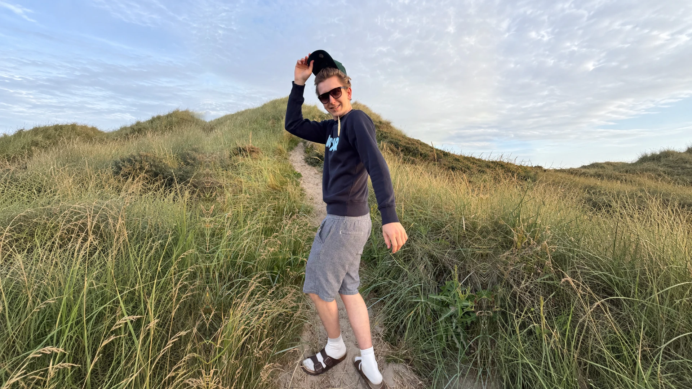
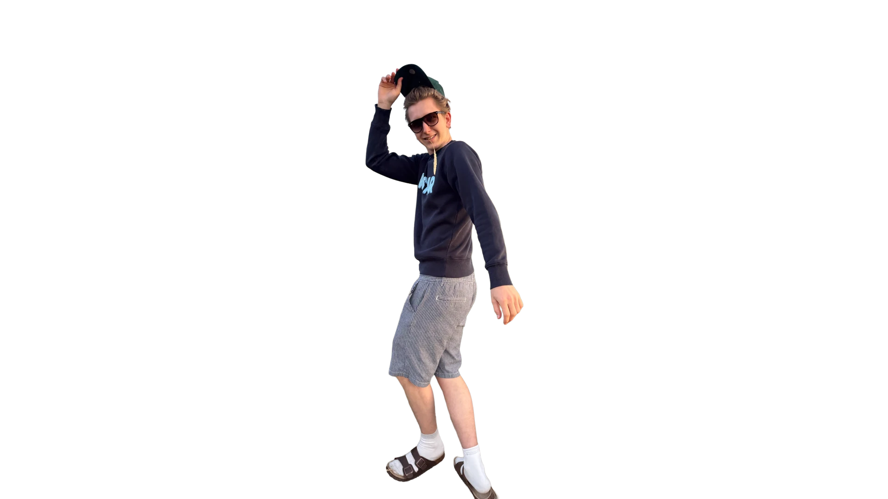

Riktig utstyr til hvert oppdrag.
Ikke mer enn jobben krever – ikke mindre heller.
Om utstyretEt kreativt studio med nye perspektiver.
Hva skjer når interessen for film, design og teknologi møtes med et ønske om å gjøre ting litt annerledes?
Et uavhengig kreativt studio som kombinerer kreativitet, moderne teknologi og nye arbeidsmetoder for å utforske muligheter, utfordre det tradisjonelle og skape gjennomførte resultater.
For gode ideer fortjener mer enn å bare forbli ideer.


Om Orion
Jeg har alltid vært fascinert av hvor stor forskjell godt visuelt arbeid kan gjøre. Hvordan en gjennomtenkt film, et godt bilde eller et sterkt design kan fange oppmerksomhet, vekke følelser og gjøre noe helt vanlig til noe spesielt.
Uansett hvem du er
Enten du driver en stor bedrift, akkurat har startet din egen virksomhet, eller ønsker å forevige et spesielt øyeblikk i livet, er målet mitt det samme: Å skape noe du virkelig blir fornøyd med, og som du kan være stolt av å vise frem.
Ved å holde kostnadene nede, velge riktig utstyr til hvert oppdrag og legge større vekt på planlegging, kreativitet og etterarbeid, kan jeg tilby gjennomførte produksjoner til en mer tilgjengelig pris.
Ikke mer enn jobben krever – ikke mindre heller.
Om utstyretGodt forarbeid sparer tid, penger og overraskelser.
Slik planlegger viHer blir godt råmateriale til noe du er stolt av å vise frem.
Om etterarbeidetPris er ikke alt
Samtidig vet jeg at pris ikke er alt. Det viktigste er å kunne stole på at sluttresultatet blir bra. Med flere års erfaring innen visuell produksjon, design og avansert redigeringsprogramvare har jeg opparbeidet meg en bred kompetanse som gjør det mulig å tilpasse både uttrykk og arbeidsmetoder til ulike prosjekter.
For meg handler det ikke om hvor stor produksjonen er, eller hvor dyrt utstyret er. Det handler om hva vi klarer å skape med det vi har.
Og det er akkurat det Orion Produksjon handler om.
Orion Elias Scromeda